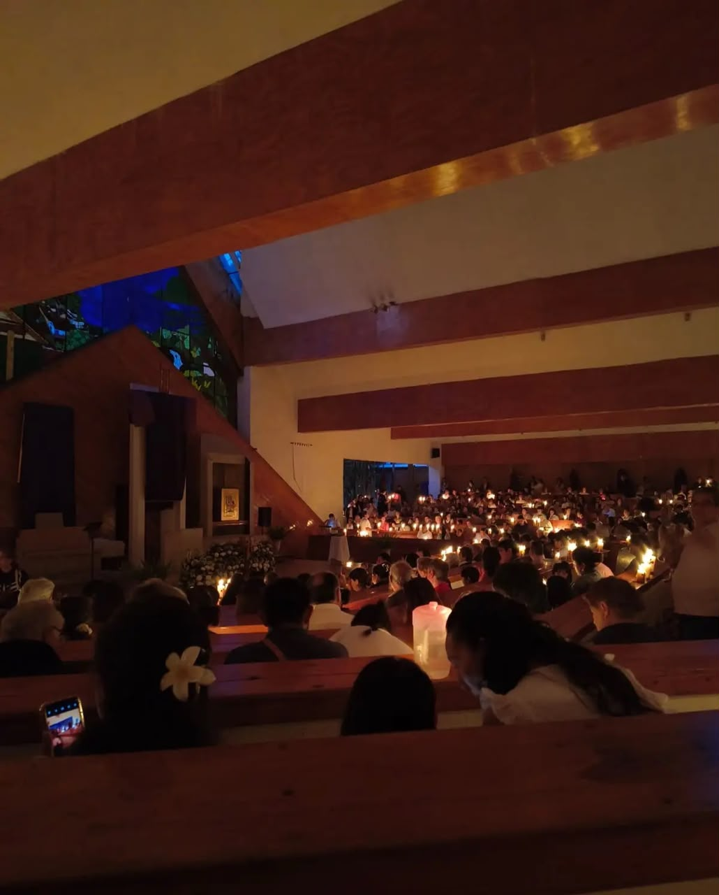

LUGARES QUE PUEDES VISITAR
"Hay lugares que no solo visitas, te abrazan y se quedan contigo para siempre."
La laguna
Está ubicada en el centro del municipio de Valle de Bravo, Estado de México, a 156 km de la CDMX. Es un lago artificial creado en 1947, en el corazón del pueblo, rodeado por el centro histórico, Avándaro y Cerro Gordo. Es el principal atractivo turístico del lugar.

La Peña Valle de Bravo
Esta dentro del mismo pueblo de Valle De Bravo,Esta a 1.5 km del centro.Llegas caminando:subes por la calle Independencia, continuas por el antiguo camino el penal, y es la subida del medio.

Cerro colorado
Esta ubicado en el municipio de Valle de Bravo, Estado de México, al sureste del centro del pueblo, a 3 km del centro, cerca de la carretera a Villa Victoria. Es un cerro de tierra rojiza que forma parte del bosque que rodea el Lago Avándaro..

Palito verde
Esta ubicado en el municipio de Valle de Bravo, Estado de México, al norte del centro, sobre la carretera Valle de Bravo Temascaltepec, a unos 15 minutos del centro. Es una comunidad rural rodeada de bosque y cerca del ojo de agua.

Avandaro
Esta ubicado al oeste del centro de Valle de Bravo, Estado de México, a 5 km del centro. Es la zona residencial y turística más conocida de Valle de Bravo, ubicada a orillas del Lago Avándaro y rodeada de bosque. Ahí se encuentra el famoso campo de golf y la zona de casas de descanso.

Mesa rica
Esta ubicada en el municipio de Valle de Bravo, Estado de México, al noroeste del centro, a unos 12 km del pueblo. Es una comunidad rural en la zona alta, cerca de la carretera Valle de Bravo - Amanalco, rodeada de bosque y campos de cultivo.